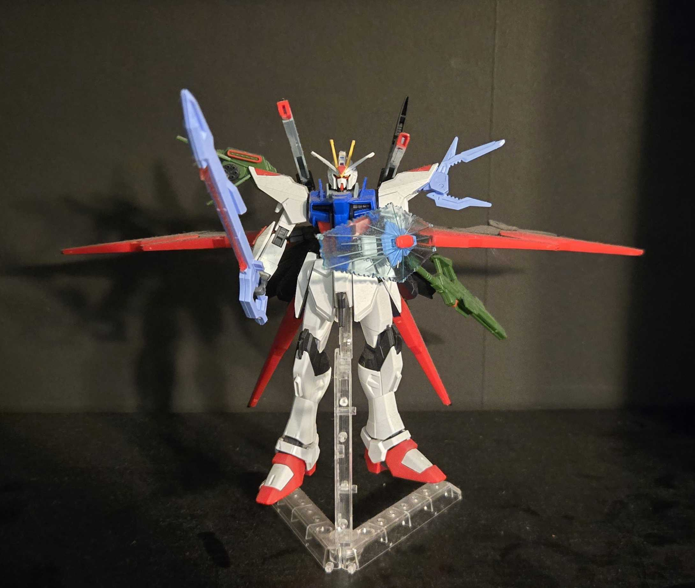

HG Gundam Perfect Strike Freedom
Tools I Used on The Build:
- Generic Nipper off of Amazon
Thoughts:
This is was the first ever Gundam I built! I did not have any prior knowledge about building model kits, so I went into the hobby blind. I had a lot of fun building the kit; however, I broke one of the pieces on the right leg and put the left ankle piece on backwards. My friend also gifted me a model base to place the kit on!
Completed Parts:
- Head Piece
- Torso
- Left Arm
- Right Arm
- Waist
- Left Leg
- Right Leg
- Accessories
- Model Base
Click Model Name to go Back to Gallery!
